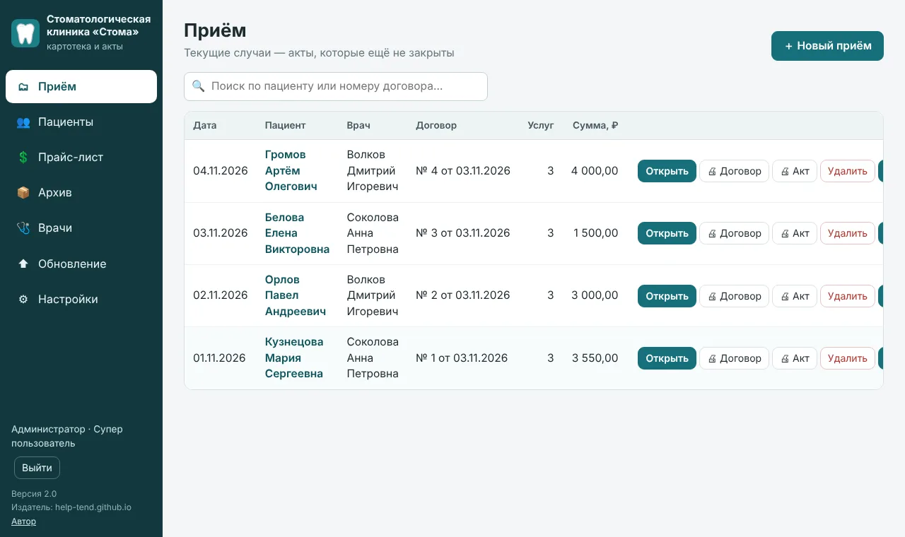

> Стома — картотека, акты и договоры для стоматологической клиники
Программа для администратора клиники: база пациентов, приёмы, акты выполненных услуг, договоры и согласия — с печатью и PDF. Работает без интернета, данные остаются в вашей клинике.

Возможности
Всё, что нужно администратору на ресепшене, в одной программе.
Картотека пациентов
ФИО, дата рождения, паспорт, адрес, телефон, СНИЛС, полис ОМС/ДМС. Поиск по любому из этих полей.
Прайс-лист
Услуги с кодом, названием и ценой. Импорт и экспорт Excel (.xlsx и .xls) — загрузите свой прайс одним файлом.
Приём и акт
Услуги выбираются галочками из списка, врач — из справочника. Сумма считается сама, акт формируется по форме клиники.
Договор на каждый приём
Новый договор со следующим номером, услуги из акта и итоговая стоимость цифрами и прописью. Шаблон можно править.
Согласие на обработку данных
Отдельный документ на отдельном листе: заполняется данными пациента, подпись расшифровывается как «Фамилия И.О.».
Печать и PDF
Предварительный просмотр, выбор принтера или сразу на принтер по умолчанию. Сохранение любого документа в PDF.
Архив случаев
Закрытые случаи хранятся в архиве: поиск, фильтр по датам, повторная печать, выгрузка в Excel.
Пользователи и права
У каждого сотрудника свой пароль. Супер пользователь — полные права; Администратор — пациенты, приёмы, печать, закрытие случая.
Резервные копии
Копия базы создаётся при каждом закрытии программы в выбранную вами папку (флешка, другой диск).
Несколько компьютеров
Одна общая база в локальной сети. Рабочие места находят главный компьютер сами — вводить адреса не нужно.
Обновление из файла
Новая версия ставится из zip-архива прямо в программе. Перед этим автоматически создаётся копия, обновление можно отменить.
Без интернета
Встроенное окно программы, Microsoft Edge и Chrome не нужны. Ничего не отправляется в интернет.
Скриншоты
Все данные на скриншотах вымышленные. Нажмите на картинку, чтобы увеличить.
Установка и роли компьютеров
Обычный установщик Windows: выбор папки, ярлыки на рабочем столе и в меню «Пуск». На первом шаге вы выбираете, как будет работать компьютер.
Главный компьютер
Здесь хранится общая база данных. Установщик сам откроет доступ в брандмауэре Windows и включит подключение по сети.
Рабочее место
Подключается к базе на главном компьютере. Имя можно ввести или оставить поле пустым — программа найдёт главный компьютер в сети сама.
Отдельный компьютер
Одно рабочее место без сети: база хранится на этом же компьютере.
Папку для базы данных вы выбираете в установщике. При удалении программы база не удаляется. Первый вход: логин «Администратор», пароль «0864» — сразу смените пароль в настройках.
Первый запуск
Один файл — установщик для Windows 10/11 (64-бит).
- Запустите установщик (понадобятся права администратора Windows).
- Выберите папку установки, роль компьютера и папку для базы данных.
- Запустите «Стоматологическая клиника «Стома»» с рабочего стола или из меню «Пуск».
Установщик пока не подписан цифровой подписью, поэтому Windows может показать окно SmartScreen: нажмите «Подробнее» → «Выполнить в любом случае».
Вопросы и ответы
Нужен ли интернет?
Нет. Программа работает полностью автономно и ничего не отправляет в интернет. Сеть нужна только внутри клиники, если вы работаете с нескольких компьютеров.
Где хранятся данные пациентов?
На компьютере клиники, в папке, которую вы выбрали при установке. У автора программы доступа к ним нет.
Можно ли работать с нескольких компьютеров одновременно?
Да. Один компьютер — главный, остальные подключаются к его базе. Номера договоров не повторяются, а если двое правят одну запись одновременно, программа предупредит об этом, не потеряв чужие изменения.
Как обновить программу?
Супер пользователь открывает раздел «Обновление», выбирает присланный zip-файл — программа проверяет его, делает резервную копию базы, устанавливает новую версию и при необходимости может вернуть прежнюю. Данные клиники при этом сохраняются.
Можно ли изменить текст договора?
Да. Супер пользователь редактирует шаблон договора в настройках; данные пациента и услуги подставляются автоматически.
Что делать, если забыт пароль Супер пользователя?
Пароли хранятся в зашифрованном виде и восстановить их нельзя. Обратитесь к автору программы.
Stoma (English)
Stoma is a Windows desktop program for a dental clinic's front desk: patient records, visits, service acts, contracts and consent forms with print preview and PDF, a price list with Excel import/export, user roles, automatic backups, and a shared database for several computers on a local network. It works fully offline and stores all data on the clinic's own computers. The interface is in Russian. See the privacy policy and terms.